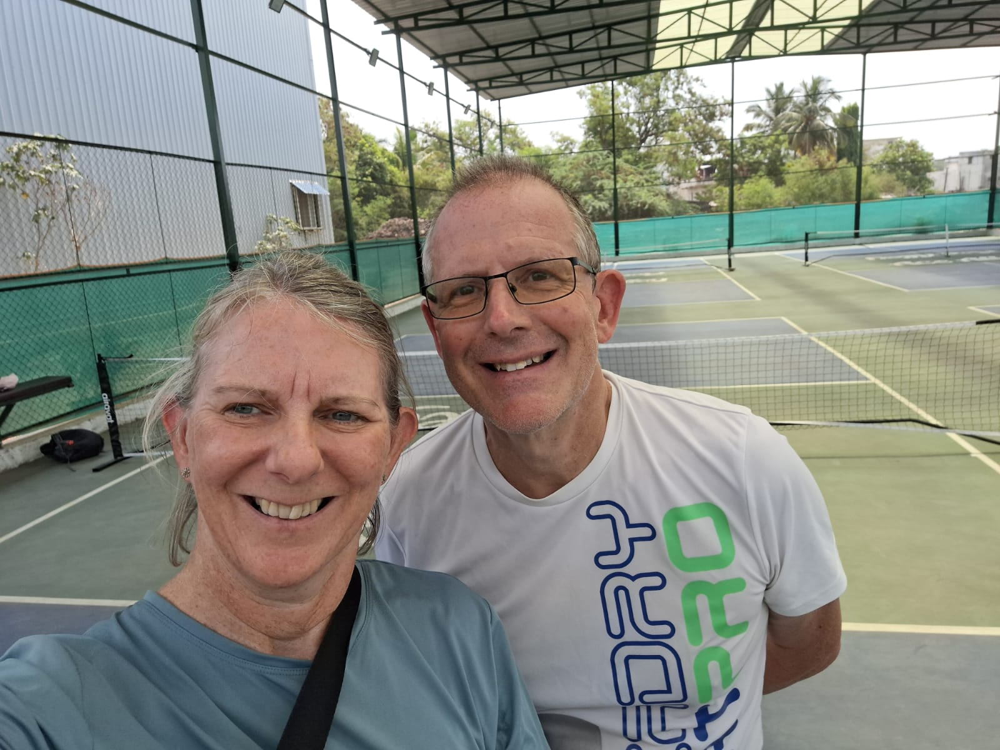

Pune was a stop on our India travels, and we went looking for a game at Ace Alley Pickleball in Viman Nagar. It's not the smoothest court to get onto as a visitor, but once we were on, the courts themselves held up fine.
Guide checked: September 2026 · Last played: April 2025

Ace Alley Pickleball in Viman Nagar has 4 outdoor hard courts with permanent lines. Booking wasn't straightforward for us as visitors — the courts were locked, and someone had to come out specifically to open up before we could play.
Once we were on court, the surface itself wasn't bad. The session didn't give us much in the way of competitive games, and the overall experience was let down more by the access hassle than by the courts themselves.
Our take: playable courts, but budget extra time and patience for getting on them — don't expect to just turn up and start.
| Court quality | ★★★☆☆ |
| Quality of games | ★★☆☆☆ |
| Ease of joining | ★★★☆☆ |
| Competitive level | ★★☆☆☆ |
| Value | ★★★★☆ |
| Wanderers rating | 5/10 |
Would we go back? Maybe, if we had a local contact to sort access ahead of time. As an overseas visitor showing up cold, be ready for the booking process to take longer than the game itself.
Also in Viman Nagar, with 4 outdoor asphalt courts and a more complete set-up than Ace Alley — restrooms, water, food and lights on-site, plus trainers available.
4 outdoor asphalt courts in Mundhwa, on the other side of the city from Viman Nagar. Dedicated courts with permanent lines and nets, and reservations are available.
The biggest court count of the three we'd look at, with 5 outdoor courts in Undri — worth considering if you're staying in the south of the city.
At Ace Alley we found the courts locked, and had to wait for someone to come and open up specifically for us. Arrange access before you go, if you can.
Whatever your plan, leave more time than you think you'll need to actually get onto a court in Pune.
Pickleball One's on-site food, water and restrooms make it a more comfortable choice than Ace Alley if you're visiting for a full session rather than a quick game.
Pune didn't turn out to be one of the stronger stops on our India travels. Ace Alley's courts were fine once we were on them, but the access hassle dragged the overall experience down. If you're building out an India route, our Goa and Bengaluru guides are worth comparing against.